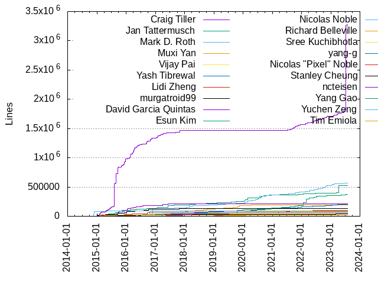

Authors
| Author | Commits (%) | + lines | - lines | First commit | Last commit | Age | Active days | # by commits |
|---|
| Craig Tiller | 9413 (17.61%) | 3282506 | 2353080 | 2015-01-05 | 2023-07-28 | 3125 days, 21:17:08 | 1103 | 1 |
| Jan Tattermusch | 5563 (10.41%) | 526750 | 654048 | 2015-01-21 | 2023-07-25 | 3106 days, 23:54:11 | 1363 | 2 |
| Mark D. Roth | 2545 (4.76%) | 564955 | 412173 | 2016-04-26 | 2023-07-19 | 2640 days, 3:15:50 | 950 | 3 |
| Muxi Yan | 1897 (3.55%) | 187957 | 121717 | 2016-07-06 | 2020-07-09 | 1463 days, 22:24:25 | 616 | 4 |
| Vijay Pai | 1864 (3.49%) | 83924 | 59346 | 2015-01-27 | 2021-07-07 | 2353 days, 0:35:28 | 694 | 5 |
| Yash Tibrewal | 1816 (3.40%) | 203704 | 202832 | 2017-07-19 | 2023-07-27 | 2199 days, 3:38:38 | 759 | 6 |
| Lidi Zheng | 1406 (2.63%) | 91111 | 46293 | 2018-10-12 | 2022-06-09 | 1336 days, 5:11:44 | 474 | 7 |
| murgatroid99 | 1389 (2.60%) | 129273 | 92913 | 2015-01-12 | 2020-01-24 | 1837 days, 22:29:06 | 450 | 8 |
| David Garcia Quintas | 1283 (2.40%) | 217183 | 130330 | 2015-04-24 | 2018-09-24 | 1248 days, 21:26:28 | 443 | 9 |
| Esun Kim | 1098 (2.05%) | 378132 | 263315 | 2019-04-15 | 2023-07-04 | 1541 days, 10:16:01 | 449 | 10 |
| Nicolas Noble | 1020 (1.91%) | 96135 | 25408 | 2014-11-21 | 2022-06-21 | 2768 days, 15:44:16 | 432 | 11 |
| Richard Belleville | 1000 (1.87%) | 36043 | 27003 | 2018-10-30 | 2023-07-25 | 1728 days, 22:49:47 | 339 | 12 |
| Sree Kuchibhotla | 950 (1.78%) | 40816 | 39975 | 2015-10-06 | 2018-10-26 | 1115 days, 17:09:50 | 359 | 13 |
| yang-g | 839 (1.57%) | 47235 | 27074 | 2015-01-12 | 2021-02-02 | 2212 days, 17:22:43 | 390 | 14 |
| Nicolas "Pixel" Noble | 833 (1.56%) | 75192 | 46749 | 2015-01-13 | 2020-05-18 | 1951 days, 17:48:18 | 339 | 15 |
| Stanley Cheung | 830 (1.55%) | 36639 | 17020 | 2015-04-16 | 2023-04-05 | 2911 days, 12:35:22 | 384 | 16 |
| ncteisen | 813 (1.52%) | 51898 | 35921 | 2016-11-23 | 2019-05-20 | 907 days, 23:38:17 | 260 | 17 |
| Yang Gao | 803 (1.50%) | 16604 | 19752 | 2015-01-14 | 2021-02-02 | 2211 days, 6:05:44 | 409 | 18 |
| Yuchen Zeng | 677 (1.27%) | 54211 | 34179 | 2016-03-08 | 2018-02-28 | 721 days, 22:23:57 | 265 | 19 |
| Tim Emiola | 655 (1.23%) | 16880 | 13525 | 2015-01-05 | 2015-11-18 | 316 days, 16:05:40 | 146 | 20 |
These didn't make it to the top: Jorge Canizales, Mehrdad Afshari, Michael Lumish, Nathaniel Manista, Karthik Ravi Shankar, Alexander Polcyn, apolcyn, Masood Malekghassemi, Noah Eisen, Eric Gribkoff, David G. Quintas, AJ Heller, Juanli Shen, kpayson64, Matt Kwong, Julien Boeuf, vjpai, Donna Dionne, Soheil Hassas Yeganeh, Ken Payson, Sergii Tkachenko, donnadionne, Makarand Dharmapurikar, Srini Polavarapu, Adele Zhou, Matthew Stevenson, Vignesh Babu, Eric Anderson, Bill Feng, Alistair Veitch, Hope Casey-Allen, adelez, Cheng-Yu Chung, Abhishek Kumar, jiangtaoli2016, Yunjia Wang, Arjun Roy, Menghan Li, David Klempner, Guantao Liu, Robbie Shade, Hannah Shi, jboeuf, hcaseyal, makdharma, Tony Lu, Yihua Zhang, ZhenLian, Ashitha Santhosh, yihuaz, thinkerou, Moiz Haidry, Prashant Jaikumar, Ming-Chuan, LisaFC, Hongwei Wang, Jiangtao Li, Zhouyihai Ding, rmstar, Yuxuan Li, Paulo Castello da Costa, Pau Freixes, Na-Na Pang, Lisa Carey, yulin liang, Alisha Nanda, Denny C. Dai, Alex Polcyn, Bogdan Drutu, ctiller, Siddharth Rakesh, Jayant Kolhe, James Newton-King, Eugene Ostroukhov, ZhouyihaiDing, yulin-liang, Yijie Ma, Doug Fawley, Chengyuan Zhang, root, Dan Born, Xuan Wang, Carl Mastrangelo, Hongyu Chen, Vizerai, nanahpang, Qi Zhao, Mariano Anaya, Dan Zhang, nnoble, Wanlin Du, mgravell, Mahak Mukhi, matt-kwong, github-actions[bot], kwasimensah, sanjaypujare, Mugur Marculescu, Chen Wang, Micah Kornfield, yifeizhuang, temiola, Ta-Wei Tu, John Luo, matthewstevenson88, Yong Ni, Vishal Powar, Qiancheng Zhao, kkm, kerbalwzy, Yousuk Seung, Patrice Chalin, Naresh, yangg, ganmacs, Nathan Herring, tony, Yuki Yugui Sonoda, Wenbo Zhu, Penn (Dapeng) Zhang, Kyle Edwards, Harsh Vardhan, Adam Michalik, zeliard, Zhanghui Mao, Zack Galbreath, ZHANG Dapeng, vishalpowar, ahedberg, Taras Galkovskyi, Tamir Duberstein, Nicolas 'Pixel' Noble, Easwar Swaminathan, Kraemer, Benjamin, Adam J Heller, siddharthshukla, jeffreyqw, billfeng327, Feng Li, Dan Ciruli, lyuxuan, chedeti, Terry Wilson, Luwei Ge, Kailash Sethuraman, Jerry, yongni, Zhen Lian, Sanjay Pujare, Michael Larson, Chuan Ren, yunjiaw26, frazenshtein, Xudong Ma, Anirudh Ramachandra, thassss, mlumish, Spencer Fang, Paul Querna, Nikolai Lifanov, Nicolas Lopez, Nate Kibler, Mike Moore, Michael Bausor, Mario Emmenlauer, Kristopher Wuollett, Christopher Warrington, Chris Bacon, Ara Ayvazyan, krestofur, jtattermusch, iamqizhao, dependabot[bot], Tyson Roberts, Sheena Madan, Paul Marks, Leifur Halldor Asgeirsson, Garrett Casto, Christian Maurer, Ben Beasley, Akshay Kumar, “Mohan, vam, srini100, nmittler, nancylucy01, klempner, easy, Michael Behr, Jim King, Donghao Qiu, xtao, ashithasantosh, Youngchan Kim, Tamas Berghammer, Takuto Ikuta, Mikko Rantanen, MakMukhi, Ian Coolidge, Harvey Tuch, Hao Nguyen, 田欧, zsurocking, vam-google, dmaclach, chenw, capstan, Siddharth Shukla, SataQiu, Ruslan Nigmatullin, Michael Darakananda, Kim Bao Long, Justin Burke, Jean de Klerk, Ivan Posva, Eric Richardson, Benjamin Peterson, Ben Sykes, Alok Kumar, vpai, josh, emkornfield, allen clement, Zach Reyes, Xiao Hang, Tommy Chen, Przemysław Sobala, Piotr Pietraszkiewicz, Perumaal S, Mathieu Leenhardt, Masaki Hara, Makdharma, Louis Ryan, Lizan Zhou, Konstantin Varlamov, Konstantin Podsvirov, Keith Moyer, Jon Skeet, Dan Wittmer, Carter Sande, Benny Wong, Alex Merry, =, zhungxd, weiyongji, dpcollins-google, chrisse74, alto-ruby, Zhehao /Tony/ Lu, Yaron Shani, Tim Hughes, Thomas Voß, Thomas Bechtold, Tatsuhiro Tsujikawa, Tariq Ramlall, Steven Wang, Stan Hu, Seongjin Cho, Qixuan Li, Ning Ren, Misha Brukman, Ming Zhao, Michael Warres, Michael Wang, Maxim Dzoba, Maxim Bunkov, Marcin Wyszynski, Loo Rong Jie, Larry Safran, Kun Zhang, Gregory Cooke, Feso, Eric Dobson, Dan Kegel, Chilledheart, Carlos O'Ryan, Ben Reed, Adam Cozzette, walkerdu, tzik, sreek, pkasting, mohanli-ml, kailashs, jayantkolhe, hongyu, brandonpaiz, Zhan Jiang, Zdeněk Sojma, Vitaly Buka, Tobias Jungel, Thomas Van Lenten, Thomas Köppe, Thiago C. D'Ávila, Stephan Zehetner, Rokya, Rob Earhart, Rob Clevenger, Peter Zhu, Per Grön, Param Reddy, Nguyen Hai Truong, Neeraj Kashyap, Moien Tajik, Mike Dalessio, Michael Yeh, Matthew Iselin, Massimiliano Torromeo, Marcel Hlopko, Marc Gravell, Mao, Kuang-che Wu, Kevin Freeman, Jozef Izso, Joe Bolinger, James Eady, Jakob Roland Andersen, Ian Sturdy, Greg Haines, Garret Kelly, Fabian Holler, David Symonds, Dave MacLachlan, Dan Rosart, Christian Svensson, Bill Clarke, Benjamin Herzog, Ben Wolsieffer, AmosWang, Alexander Staubo, Adrian Imboden, zhangkun, yashkt, xichengliudui, xambroz, wkubiak, tsunche, tpetkov, tomerv, tanjunchen, staticdev, soltanmm, sidrakesh93, scwhittle, rsilvera, remi Taylor, pmarks, pbatg, otofune, mkruskal-google, michaelywg, kumaralokgithub, jzeferino, jorgbrown, itsemmanuelfrancis, everysick, dapeng-mi, chentanjun, alex, agc-sec, aeitzman, Zoltan Kuscsik, Zhongxian Pan, Zheng SHAO, Yuwei Huang, Yuan He, Yingwei Fan, Yannic Bonenberger, Yannic, Yadong, Wouter van Oortmerssen, Wensheng Tang, Wayne Zhang, Vyacheslav Yurkov, Vy Nguyen, Vu Cong Tuan, Ville M. Vainio, VcamX, Uwe Kindler, Tyler Southard, Todd Poynor, Tim Ryan, Tim Gates, Tal Kedar, Takeshi Hagikura, Stefan Hacker, Stanislav Pavlovichev, Sean Fausett, Samuel Lijin, Ronnie Sahlberg, Ronak Jain, Robert Bradshaw, Raul Silvera, Rafi Kamal, Rafael Sales, Paul Wankadia, Paul Beusterien, Oshiumi, Mohan Li, Mike Kruskal, Michal Ostrowski, Michael Thomsen, Michael Berlin, Matt Wilson, Marek Gilbert, Mak Dharma, Leonardo Saraiva, Laramie Leavitt, Konstantinos Sofokleous, Kim Vandry, Kerrick Staley, Junsung Ko, Junhao Li, Jun Yang, Jun Mukai, Jorjun, Jonathan Moss, Jonas Vautherin, Johnny Shields, Jin, Jihun Cho, Jeffrey Rennie, Jeff Ching, Jay Lee, Jacob Young, Ivan Inozemtsev, Igor Pylypiv, Hung Dang, Hannes Magnusson, Eytan Kidron, Evan Jones, Egor Suvorov, Derek, Deepak Lukose, Danjie Wenren, Daniel Wang, Daniel Alm, Clément Péron, Clément Jean, Clemens Gruber, Christian Blichmann, Chris Aniszczyk, Chad Kunde, Benoit Daloze, Benjamin Krämer, Bassam Ojeil, Arvind Bright, Arkady Shapkin, Anna Sapek, Andres Beltran, Amanda Tarafa Mas, Allan Boll, Alessio Buraggina, Aleksandr Dankovtsev, Akash Patel, Aidan Wolter, Ahmed Mahdy, Aggelos Avgerinos, Adam Czachorowski, Adam, Aaron Patterson, 1524995078@qq.com, 陈雨童, 小么小儿郎EL, 安正超, モハメド, zpencer, zhoulin xie, zhimingxie, yuangongji (A), yuangongji, y.okamoto, xiaohaoliang, wilson, vperus, vcaesar, tuttieee, tongxuan.ltx, tdbhacks, tania-m, suryadev99, stdll00, simo9000, shangwu-google, samuelw, sammcveety, sai-sunder-s, ryan-gunderson, rocking, rburns1293, randvis, pythias, prettyboy, perumaalgoog, perjoh, nownabe, nnorwitz, niquepolice, nickylba, nathanielmanistaatgoogle, nathaniel, molto, mojh7, miyucy, mint570, michael-berlin, maxwell-demon, maxim-babenko, mattn, matoro, maoyangLiu, mangogan-git, louiscryan, laststem, ktr, klfreeman, kkm (aka Kirill Katsnelson), kennylong, kacper-ka, jayonlau, itessier, ita9naiwa, ikedam, igorpeshansky, hxcan.cai, hongnod, hexchain, hedane, haorenfsa, h-vetinari, goldenbull, gkarthiks, gankineri, francisco souza, ericsalo, edmondj, dutor, danzh, daicoden, cut4th, curiousjazz77, crewmatt, cpsauer, clayg, chai2010, bojeil-google, bjorn, bithavoc, bcoopers, aveitch, aaronjheng, Zhuochun, Zhiliang Xu, Yusuke Sato, Yushiro FURUKAWA, Yuriy Chernyshov, Yulin Liang, Yu Zhou, Yosuke Ishikawa, Yoshihiro Saito, Yonathan Randolph, Yesudeep Mangalapilly, Yan Reznikov, Xiaoguang Sun, Xiao, Wojtek Kubiak, Wilson, Whitney Jackson, WenTao Ou, Walter Lee, WANG Lei, Vojtěch Boček, Vladimir Moskva, Vincent van Dam, Vincent Batts, Vince Gatto, Vihang Mehta, Victor Titor, Victor Boivie, Valentyn Shybanov, Valentin, Tyler Rockwood, Tsuyoshi Ozawa, Toshihito Kikuchi, Tony Han, Tony Allevato, Tomasz Jonak, Tom Ward, Tom Lundell, Tom, Todd Derr, Timon Van Overveldt, Timo Lange, Thomas Zeugner, Thomas Wouters, Thomas Pietrzak, Thomas Klausner, Thomas Etter, Thomas De Schampheleire, Thibaut Le Guilly, Thi Doãn, The Gitter Badger, Test User, Teodor, Taras, Taner Topal, Tamihiro Yuzawa, Takashi Matsuo, Taiju Tsuiki, T.J. Mercier, Sutou Kouhei, Sunyeop Lee, Stuart Bishop, Stig Brautaset, Steven E Wright, Steve Jenson, Stephen Thorne, Steffen Zimmermann, Stefan Prietl, Stanislav, Stan, Simon Podlipsky, Simon Koo, Sidnei da Silva, Siddhesh Poyarekar, Shota Iguchi, Shohei Kamimori, Shaw, Shaun McCormick, Seungmo Koo, Seth Vargo, Scott84, Sayed Ibrahim Hashimi, Santosh Ananthakrishnan, Sanjay Ghemawat, Sangwon Hong, Sam Khan, Sam Clegg, Saleem Abdulrasool, Ryo Murakami, Ryan Kohler, Ryan Gordon, Ryan Beasley, Ryan, Ruyi Wang, Romain Geissler @ Amadeus, Rohan Talip, Ritesh Shukla, Rinat Abdullin, Ravi Prakash, Rakesh Iyer, Rajendra Talekar, Rainer Schoenberger, Piotr Sikora, Piotr Morgwai Kotarbinski, Philipp Wollermann, Philipp Wahala, Peter W, Peter Gonda, Peter Foley, Paweł Wichary, Pavel Simó, Pavel Koshelev, Paul Petit, Patryk Lesiewicz, Parveen Kumar, Parker Moore, Paddy Byers, Pablo Busse, Oscar Shi, Olivier Bellone, Oliver Smith, Norman Link, Nobutaka Takushima, Nobuaki Sukegawa, Niyas Sait, Nikolai Semenov, Nico Weber, Nick Hill, Nick Gordon, Nick Gauthier, Nguyen Quang Huy, Nguyen Phuong An, Nels Beckman, Neil Shen, Nayef Ghattas, Nathan Mittler, Nao Minami, Myungjun Kim, Moses Koledoye, Moritz, Morgan Chen, Misty De Meo, Misha Efimov, Minku Lee, Mingding, Han, Mikołaj Siedlarek, Mikhail Lappo, Mikhail Galanin, Mikael Grimstad, Miguel Ángel, Mickaël Guérin, Michiel de Jong, Michael Rebello, Michael P. Nitowski, Michael Nosthoff, Michael Mercier, Michael Jarrett, Michael Herold, Michael Beardsworth, Micah Paul Ramos, Mayuki Sawatari, Maxim Philippov, Max Vorobev, Matthew Nuckolls, Matthew Leibowitz, Matthew D. Steele, Matthew Bender, Matt Ward, Matt Olson, Matt Fowles Kulukundis, Martin Dyring-Andersen, Markus Heß, Marko Bogdanović, Mark Mandel, Mario Jones Vimal, Marco Concetto Rudilosso, Marc Wandschneider, Marc Plano-Lesay, Marc Bury, Manuel Kroiss, Mahdi K. Fard, Maciej Lasyk, Lukas Lipka, Lukacs T. Berki, Luka Rahne, Lucas Abel, Lily Li, Levon Ter-Grigoryan, Lev Pachmanov, Lei Huang, Laurent Le Brun, Lars Kanis, Lakshay Nasa, LIU JIAN, Kumar Akshay, Kristen Kozak, Krasimir Georgiev, Kislay Kishore, Kirill Katsnelson, Kevin Dungs, Kevin Damm, Kelly Norton, Keith Smiley, Kaya Bekiroğlu, Kangmo Kim, Kane York, Kamil Skalski, K.K. Yap, Jürg Billeter, Jérôme Duval, Jundol, Julian Xhokaxhiu, Joshua Haberman, Josh Haberman, Jonathan Hseu, John Millikin, Johan Euphrosine, Joey, Joe Shaw, Joan Fontanals, Jingyi Wei, Jiajun Yao, Jeremy Yallop, Jeremie Girault, Jeff Peoples, Jeff Moser, Jean Boussier, Javier, Jason Mobarak, Jason Meller, Jared Hance, James Fish, James Crasta, Jagoba Gascón, Jacob Dlougach, Jack Wakefield, J. Martin, Ivo List, Ivan Vučica, Ishan Khare, Isabel Andrade, Ilya Lukin, Igor Zhilianin, Igor Slepchin, Ian Rodney, Ian Haken, Hyunjun Kim, HugoHo0212, HuKeping, Hu Shuai, Ho Ngok Chao, Hayashi Takuya, HarrisonXi, Hans, Hannan Ali, Gunnlaugur Thor Briem, Guilherme Oliveira, Guangwen Feng, Greg Miller, Graham Campbell, Gorka Lerchundi Osa, Gleb Popov, Giang Nguyen, Georgy Yakovlev, Geoffrey Pruvost, Gazihan Alankus, Gavin Lambert, Frédéric Nadeau, Fred Klassen, Frank de Jonge, Frank Natividad, Frank Groeneveld, Florian Nagel, Florian Ferstl, Florent Castelli, Flavio Medeiros, Filippo De Santis, Fahrzin Hemmati, Eundoo Song, Eryu Xia, Erwin de Haan, Ernie Miller, Eric Pinzur, Enrico Pertoso, Emmanuel T Odeke, Emeka-NMC (SII), Elkana Tovey, Eduardo Cáceres de la Calle, Eduardo Caceres, Eduardo Broto, Edmundo Rodrigues, Dylan Thacker-Smith, Dohyun Cheon, Dmitry Kovalev, Dmitri Shuralyov, Dionna Glaze, David Young-Chan Kay, David Hoover, David Federman, David E. Weekly, David Cowden, David Benjamin, Dave Bailey, Daren McCulley, Dante Camarena, Daniel Upton, Daniel Neighman, Daniel Joos, Daniel Harrison, Daniel Cazzulino, Daniel Azuma, Dan Halperin, Damon, Dalton, Dalei Li, DJ Mountney, Connor Peet, ColdMeekly, Chun-Hung Hsiao, Christopher S, Christophe Bougère, Chris Wilcox, Chris Trimble, Chris St. Pierre, Chris Lamb, Chris Evans, Chi Wang, Chen wang, Carlos Valera, Carlos Sobrinho, Carl Lundin, Can Guler, Camillo Lugaresi, Cameron Taggart, CZRZ, Bulat Gaifullin, Bryan Blanchard, Bruno Pitrus, Brian Zhao, Brian O'Connor, Brian Diesel, Brian Buchalter, Brian, Brett McBride, Brent Shaffer, BrandonY, Brad Hess, Brad Barnich, Bouke van der Bijl, Bolutife Ogunsola, Blair Kutzman, Bjorn Svensson, Bernhard Walle, Benjamin Shaya, Benjamin Reed, Benjamin Kramer, Benjamin Barenblat, Bartosz Stebel, Axel Huebl, Austin Schuh, Augie Fackler, Arkadiy Shapkin, Arkadiusz Bokowy, Arjun, Arian Arfaian, Ara Nguyen, April Schleck, April Kyle Nassi, Anuj Dhungana, Antony Dovgal, Anton Danielsson, Anthony Yeh, Anthony Bellissimo, Andrew Scherkus, Andres Medina, Andre Medeiros, Anatol Belski, Amchii, Alexey Mikheyev, Alexey Firago, Alexander Houben, Alexander Gutkin, Alexander Grund, Alexander Dzyuba, Alex Villarreal, Alex Lo, Alex Amato, Alex, Alena Varkockova, Alberto Pedron, Akshay Shah, Ade Oshineye, Adam Lemmon, Adam Langley, Adam Hess, Abael He, Aaron Pham, Aaron Jacobs, Aaron Isotton, Aaron Beitch, @DEFSTREAM, 3vilM33pl3, 3405691582, 0oneo
Only top 20 authors shown
Only top 20 authors shown
| Month | Author | Commits (%) | Next top 5 | Number of authors |
|---|
| 2023-07 | Craig Tiller | 46 (30.46% of 151) | AJ Heller, Vignesh Babu, Sergii Tkachenko, apolcyn, Yijie Ma | 29 |
| 2023-06 | Craig Tiller | 42 (26.75% of 157) | Mark D. Roth, Yash Tibrewal, Eugene Ostroukhov, Sergii Tkachenko, AJ Heller | 32 |
| 2023-05 | Craig Tiller | 50 (25.00% of 200) | AJ Heller, Mark D. Roth, Sergii Tkachenko, Luwei Ge, Vignesh Babu | 39 |
| 2023-04 | Yash Tibrewal | 15 (13.51% of 111) | Craig Tiller, Esun Kim, AJ Heller, Mark D. Roth, Jan Tattermusch | 27 |
| 2023-03 | Craig Tiller | 33 (20.00% of 165) | Yash Tibrewal, Jan Tattermusch, Eugene Ostroukhov, AJ Heller, Stanley Cheung | 37 |
| 2023-02 | AJ Heller | 26 (17.81% of 146) | Craig Tiller, Mark D. Roth, Yash Tibrewal, Yijie Ma, Esun Kim | 29 |
| 2023-01 | Craig Tiller | 18 (11.39% of 158) | Yash Tibrewal, Mark D. Roth, AJ Heller, Vignesh Babu, Yijie Ma | 42 |
| 2022-12 | Craig Tiller | 23 (19.17% of 120) | Cheng-Yu Chung, Mark D. Roth, AJ Heller, Vignesh Babu, Yijie Ma | 27 |
| 2022-11 | Craig Tiller | 27 (17.09% of 158) | Cheng-Yu Chung, Mark D. Roth, Esun Kim, Vignesh Babu, Yash Tibrewal | 29 |
| 2022-10 | Craig Tiller | 51 (25.37% of 201) | Mark D. Roth, Cheng-Yu Chung, AJ Heller, Yash Tibrewal, Jan Tattermusch | 28 |
| 2022-09 | Craig Tiller | 93 (36.76% of 253) | Mark D. Roth, Cheng-Yu Chung, AJ Heller, Yash Tibrewal, Esun Kim | 33 |
| 2022-08 | Craig Tiller | 85 (36.17% of 235) | Sergii Tkachenko, Yash Tibrewal, AJ Heller, Mark D. Roth, Vignesh Babu | 29 |
| 2022-07 | Craig Tiller | 41 (25.31% of 162) | Mark D. Roth, Esun Kim, AJ Heller, Denny C. Dai, Sergii Tkachenko | 26 |
| 2022-06 | Craig Tiller | 43 (23.63% of 182) | Mark D. Roth, Vignesh Babu, Yash Tibrewal, Esun Kim, Sergii Tkachenko | 34 |
| 2022-05 | Craig Tiller | 51 (26.15% of 195) | Mark D. Roth, AJ Heller, Jan Tattermusch, Esun Kim, Lidi Zheng | 39 |
| 2022-04 | Mark D. Roth | 35 (23.81% of 147) | Jan Tattermusch, Craig Tiller, Yash Tibrewal, Lidi Zheng, Vignesh Babu | 28 |
| 2022-03 | Craig Tiller | 43 (23.50% of 183) | Mark D. Roth, Jan Tattermusch, Yash Tibrewal, AJ Heller, Lidi Zheng | 28 |
| 2022-02 | Craig Tiller | 26 (18.06% of 144) | Mark D. Roth, Yash Tibrewal, Jan Tattermusch, Esun Kim, AJ Heller | 31 |
| 2022-01 | Jan Tattermusch | 32 (19.39% of 165) | Craig Tiller, Mark D. Roth, Esun Kim, Yash Tibrewal, AJ Heller | 33 |
| 2021-12 | Craig Tiller | 26 (20.16% of 129) | Jan Tattermusch, Mark D. Roth, apolcyn, Yash Tibrewal, Lidi Zheng | 25 |
| 2021-11 | Craig Tiller | 55 (30.39% of 181) | Esun Kim, Mark D. Roth, Richard Belleville, Ming-Chuan, Jan Tattermusch | 34 |
| 2021-10 | Craig Tiller | 57 (27.27% of 209) | Mark D. Roth, Yash Tibrewal, Ming-Chuan, Lidi Zheng, Jan Tattermusch | 41 |
| 2021-09 | Craig Tiller | 59 (27.83% of 212) | Denny C. Dai, Ta-Wei Tu, Jan Tattermusch, Mark D. Roth, Lidi Zheng | 38 |
| 2021-08 | Craig Tiller | 56 (25.11% of 223) | Yash Tibrewal, Lidi Zheng, AJ Heller, Tamir Duberstein, Mark D. Roth | 41 |
| 2021-07 | Lidi Zheng | 20 (17.39% of 115) | Craig Tiller, Mark D. Roth, Yash Tibrewal, Sergii Tkachenko, Ming-Chuan | 35 |
| 2021-06 | Mark D. Roth | 13 (11.40% of 114) | Yash Tibrewal, Jan Tattermusch, Vijay Pai, Paulo Castello da Costa, Lidi Zheng | 37 |
| 2021-05 | Paulo Castello da Costa | 15 (12.61% of 119) | Lidi Zheng, Yash Tibrewal, Jan Tattermusch, Eric Gribkoff, Vijay Pai | 31 |
| 2021-04 | Lidi Zheng | 20 (13.25% of 151) | Yash Tibrewal, Mark D. Roth, Esun Kim, Sergii Tkachenko, Ashitha Santhosh | 39 |
| 2021-03 | Yash Tibrewal | 24 (15.48% of 155) | Lidi Zheng, Esun Kim, AJ Heller, Jan Tattermusch, Vijay Pai | 34 |
| 2021-02 | Richard Belleville | 43 (16.67% of 258) | Lidi Zheng, Jan Tattermusch, Yash Tibrewal, Mark D. Roth, Esun Kim | 35 |
| 2021-01 | Esun Kim | 35 (12.11% of 289) | Mark D. Roth, Jan Tattermusch, Richard Belleville, Sergii Tkachenko, Stanley Cheung | 38 |
| 2020-12 | Esun Kim | 43 (14.29% of 301) | Jan Tattermusch, Sergii Tkachenko, Mark D. Roth, Richard Belleville, Yash Tibrewal | 40 |
| 2020-11 | Esun Kim | 54 (16.46% of 328) | Lidi Zheng, Jan Tattermusch, Chengyuan Zhang, Yash Tibrewal, yulin-liang | 35 |
| 2020-10 | Esun Kim | 92 (21.00% of 438) | Mark D. Roth, Lidi Zheng, Jan Tattermusch, Richard Belleville, Yash Tibrewal | 46 |
| 2020-09 | Mark D. Roth | 68 (19.71% of 345) | Esun Kim, Lidi Zheng, Yash Tibrewal, Donna Dionne, Karthik Ravi Shankar | 40 |
| 2020-08 | Jan Tattermusch | 88 (16.36% of 538) | Richard Belleville, Eric Gribkoff, Mark D. Roth, Yash Tibrewal, Lidi Zheng | 38 |
| 2020-07 | Jan Tattermusch | 70 (13.49% of 519) | Karthik Ravi Shankar, Richard Belleville, Esun Kim, Vijay Pai, Mark D. Roth | 45 |
| 2020-06 | Richard Belleville | 80 (15.94% of 502) | Mark D. Roth, Karthik Ravi Shankar, Esun Kim, Lidi Zheng, Yash Tibrewal | 44 |
| 2020-05 | Jan Tattermusch | 34 (9.29% of 366) | Stanley Cheung, Yash Tibrewal, Mark D. Roth, Lidi Zheng, Vijay Pai | 53 |
| 2020-04 | Lidi Zheng | 79 (14.74% of 536) | Jan Tattermusch, Yash Tibrewal, Donna Dionne, Mark D. Roth, Muxi Yan | 43 |
| 2020-03 | Lidi Zheng | 63 (14.22% of 443) | Mark D. Roth, Jan Tattermusch, Eric Gribkoff, Richard Belleville, Donna Dionne | 38 |
| 2020-02 | Lidi Zheng | 123 (23.25% of 529) | Mark D. Roth, Yash Tibrewal, Richard Belleville, Jan Tattermusch, Eric Gribkoff | 40 |
| 2020-01 | Lidi Zheng | 127 (24.85% of 511) | Jan Tattermusch, Esun Kim, Yash Tibrewal, Vijay Pai, Mark D. Roth | 51 |
| 2019-12 | Lidi Zheng | 68 (18.38% of 370) | Jan Tattermusch, Richard Belleville, Vijay Pai, Esun Kim, Guantao Liu | 40 |
| 2019-11 | Esun Kim | 66 (15.10% of 437) | Muxi Yan, Jan Tattermusch, Lidi Zheng, Yash Tibrewal, Richard Belleville | 46 |
| 2019-10 | Vijay Pai | 141 (18.73% of 753) | Jan Tattermusch, Lidi Zheng, Richard Belleville, Esun Kim, Mark D. Roth | 63 |
| 2019-09 | Jan Tattermusch | 124 (26.78% of 463) | Esun Kim, Matthew Stevenson, Lidi Zheng, Muxi Yan, Yash Tibrewal | 56 |
| 2019-08 | Richard Belleville | 66 (11.06% of 597) | Esun Kim, Juanli Shen, Matthew Stevenson, Jan Tattermusch, Tony Lu | 45 |
| 2019-07 | Jan Tattermusch | 74 (15.42% of 480) | Yunjia Wang, Tony Lu, Esun Kim, mgravell, Richard Belleville | 51 |
| 2019-06 | Yunjia Wang | 61 (11.40% of 535) | Muxi Yan, Jan Tattermusch, Richard Belleville, Lidi Zheng, Yash Tibrewal | 50 |
| 2019-05 | Karthik Ravi Shankar | 48 (10.37% of 463) | Yash Tibrewal, Jan Tattermusch, Muxi Yan, Na-Na Pang, Srini Polavarapu | 61 |
| 2019-04 | Karthik Ravi Shankar | 97 (16.44% of 590) | Yash Tibrewal, Jan Tattermusch, Muxi Yan, Lidi Zheng, Mark D. Roth | 56 |
| 2019-03 | Karthik Ravi Shankar | 107 (16.82% of 636) | Jan Tattermusch, Lidi Zheng, Mark D. Roth, Bill Feng, Richard Belleville | 54 |
| 2019-02 | Jan Tattermusch | 63 (12.07% of 522) | Vijay Pai, Eric Gribkoff, Yash Tibrewal, Soheil Hassas Yeganeh, yang-g | 58 |
| 2019-01 | Yash Tibrewal | 85 (18.12% of 469) | Jan Tattermusch, Muxi Yan, Lidi Zheng, Vijay Pai, Juanli Shen | 50 |
| 2018-12 | Muxi Yan | 60 (14.35% of 418) | Jan Tattermusch, Lidi Zheng, Mark D. Roth, Eric Gribkoff, yang-g | 41 |
| 2018-11 | Muxi Yan | 91 (16.49% of 552) | Jan Tattermusch, Yash Tibrewal, Lidi Zheng, Vijay Pai, Bill Feng | 40 |
| 2018-10 | Muxi Yan | 151 (19.69% of 767) | Jan Tattermusch, ncteisen, Yash Tibrewal, Richard Belleville, Noah Eisen | 52 |
| 2018-09 | Jan Tattermusch | 49 (14.16% of 346) | Hope Casey-Allen, Yash Tibrewal, Vijay Pai, ncteisen, Muxi Yan | 38 |
| 2018-08 | Jan Tattermusch | 118 (22.14% of 533) | Yash Tibrewal, Vijay Pai, Juanli Shen, ncteisen, Mehrdad Afshari | 56 |
| 2018-07 | Jan Tattermusch | 76 (16.31% of 466) | ncteisen, Mehrdad Afshari, Sree Kuchibhotla, Yash Tibrewal, kpayson64 | 52 |
| 2018-06 | Jan Tattermusch | 65 (11.82% of 550) | ncteisen, Mehrdad Afshari, Muxi Yan, Mark D. Roth, kpayson64 | 55 |
| 2018-05 | Jan Tattermusch | 98 (20.76% of 472) | Muxi Yan, kpayson64, ncteisen, Yash Tibrewal, Mehrdad Afshari | 46 |
| 2018-04 | Mehrdad Afshari | 76 (16.59% of 458) | Jan Tattermusch, Mark D. Roth, Muxi Yan, Yash Tibrewal, Matt Kwong | 46 |
| 2018-03 | Jan Tattermusch | 64 (12.77% of 501) | ncteisen, Vijay Pai, David Garcia Quintas, Muxi Yan, Yash Tibrewal | 60 |
| 2018-02 | Mehrdad Afshari | 87 (17.90% of 486) | Vijay Pai, Muxi Yan, Noah Eisen, Jan Tattermusch, Mark D. Roth | 50 |
| 2018-01 | Mehrdad Afshari | 82 (14.41% of 569) | Jan Tattermusch, ncteisen, Vijay Pai, Mark D. Roth, Muxi Yan | 50 |
| 2017-12 | Mehrdad Afshari | 56 (12.58% of 445) | ncteisen, David Garcia Quintas, Muxi Yan, Jan Tattermusch, Vijay Pai | 40 |
| 2017-11 | ncteisen | 94 (13.78% of 682) | Jan Tattermusch, Yash Tibrewal, Craig Tiller, Vijay Pai, Mark D. Roth | 52 |
| 2017-10 | Craig Tiller | 247 (34.74% of 711) | Yash Tibrewal, Muxi Yan, Jan Tattermusch, Vijay Pai, Mark D. Roth | 53 |
| 2017-09 | Craig Tiller | 222 (29.68% of 748) | Yash Tibrewal, Jan Tattermusch, Muxi Yan, Nathaniel Manista, Mark D. Roth | 47 |
| 2017-08 | Jan Tattermusch | 90 (19.15% of 470) | Muxi Yan, Sree Kuchibhotla, Yuchen Zeng, Matt Kwong, Craig Tiller | 50 |
| 2017-07 | Craig Tiller | 125 (21.08% of 593) | Muxi Yan, Jan Tattermusch, Sree Kuchibhotla, ncteisen, Vijay Pai | 47 |
| 2017-06 | ncteisen | 75 (14.48% of 518) | Jan Tattermusch, Craig Tiller, Muxi Yan, Matt Kwong, Mehrdad Afshari | 38 |
| 2017-05 | Craig Tiller | 216 (26.93% of 802) | Jan Tattermusch, Muxi Yan, Nicolas "Pixel" Noble, ncteisen, Mehrdad Afshari | 48 |
| 2017-04 | Craig Tiller | 556 (46.10% of 1206) | Muxi Yan, Sree Kuchibhotla, Jan Tattermusch, murgatroid99, Mark D. Roth | 49 |
| 2017-03 | Craig Tiller | 399 (35.44% of 1126) | Muxi Yan, Sree Kuchibhotla, Yuchen Zeng, Alexander Polcyn, Jan Tattermusch | 56 |
| 2017-02 | Craig Tiller | 344 (41.30% of 833) | Muxi Yan, Sree Kuchibhotla, Jan Tattermusch, David Garcia Quintas, Yuchen Zeng | 56 |
| 2017-01 | Craig Tiller | 241 (34.38% of 701) | Muxi Yan, Mark D. Roth, Jan Tattermusch, Sree Kuchibhotla, yang-g | 48 |
| 2016-12 | Craig Tiller | 137 (27.96% of 490) | Mark D. Roth, Jan Tattermusch, Masood Malekghassemi, yang-g, Nathaniel Manista | 44 |
| 2016-11 | Craig Tiller | 215 (28.25% of 761) | Mark D. Roth, David Garcia Quintas, Yuchen Zeng, Jan Tattermusch, Muxi Yan | 42 |
| 2016-10 | Craig Tiller | 194 (21.06% of 921) | Mark D. Roth, Jan Tattermusch, Muxi Yan, Sree Kuchibhotla, Yuchen Zeng | 44 |
| 2016-09 | Craig Tiller | 219 (27.14% of 807) | Mark D. Roth, Jan Tattermusch, Yuchen Zeng, Nicolas Noble, David Garcia Quintas | 50 |
| 2016-08 | Yuchen Zeng | 86 (12.27% of 701) | Craig Tiller, Mark D. Roth, David Garcia Quintas, Nicolas Noble, kpayson64 | 50 |
| 2016-07 | Craig Tiller | 128 (15.08% of 849) | kpayson64, Stanley Cheung, Mark D. Roth, Jorge Canizales, Nicolas Noble | 38 |
| 2016-06 | Jan Tattermusch | 270 (27.03% of 999) | Craig Tiller, David Garcia Quintas, Yuchen Zeng, Sree Kuchibhotla, murgatroid99 | 34 |
| 2016-05 | Jan Tattermusch | 264 (27.67% of 954) | Craig Tiller, David Garcia Quintas, murgatroid99, Sree Kuchibhotla, Nicolas Noble | 37 |
| 2016-04 | Craig Tiller | 305 (36.40% of 838) | Jan Tattermusch, Sree Kuchibhotla, David Garcia Quintas, Nicolas Noble, murgatroid99 | 41 |
| 2016-03 | Craig Tiller | 393 (36.46% of 1078) | Jan Tattermusch, David Garcia Quintas, Nicolas "Pixel" Noble, Sree Kuchibhotla, murgatroid99 | 45 |
| 2016-02 | Craig Tiller | 241 (23.31% of 1034) | Jan Tattermusch, Vijay Pai, murgatroid99, Nicolas "Pixel" Noble, Masood Malekghassemi | 42 |
| 2016-01 | Craig Tiller | 202 (22.54% of 896) | Jan Tattermusch, David Garcia Quintas, Nicolas "Pixel" Noble, murgatroid99, Vijay Pai | 35 |
| 2015-12 | Craig Tiller | 260 (37.85% of 687) | Jan Tattermusch, yang-g, Yang Gao, Sree Kuchibhotla, Nicolas Noble | 34 |
| 2015-11 | Craig Tiller | 134 (38.07% of 352) | Jan Tattermusch, yang-g, Julien Boeuf, vjpai, Sree Kuchibhotla | 30 |
| 2015-10 | Jan Tattermusch | 104 (16.38% of 635) | Craig Tiller, murgatroid99, Jorge Canizales, David Garcia Quintas, Stanley Cheung | 35 |
| 2015-09 | Craig Tiller | 245 (35.25% of 695) | Jorge Canizales, Jan Tattermusch, Nicolas Noble, murgatroid99, David Garcia Quintas | 28 |
| 2015-08 | Craig Tiller | 235 (19.17% of 1226) | Jan Tattermusch, yang-g, murgatroid99, Jorge Canizales, Julien Boeuf | 36 |
| 2015-07 | Craig Tiller | 323 (29.26% of 1104) | Jan Tattermusch, David Garcia Quintas, yang-g, murgatroid99, Jorge Canizales | 33 |
| 2015-06 | Craig Tiller | 376 (37.04% of 1015) | Jorge Canizales, David Garcia Quintas, Jan Tattermusch, Siddharth Rakesh, murgatroid99 | 33 |
| 2015-05 | Craig Tiller | 391 (40.02% of 977) | Jan Tattermusch, Yang Gao, Jorge Canizales, Tim Emiola, murgatroid99 | 40 |
| 2015-04 | Craig Tiller | 290 (31.90% of 909) | Tim Emiola, Jan Tattermusch, Yang Gao, Vijay Pai, Nicolas "Pixel" Noble | 39 |
| 2015-03 | murgatroid99 | 85 (13.36% of 636) | Craig Tiller, Yang Gao, Tim Emiola, Vijay Pai, Jorge Canizales | 40 |
| 2015-02 | Craig Tiller | 507 (27.86% of 1820) | Tim Emiola, Yang Gao, Jan Tattermusch, murgatroid99, Nicolas Noble | 52 |
| 2015-01 | Craig Tiller | 404 (43.35% of 932) | Tim Emiola, murgatroid99, Nicolas Noble, Yang Gao, Nicolas "Pixel" Noble | 38 |
| 2014-12 | ctiller | 34 (26.98% of 126) | nnoble, yangg, temiola, jtattermusch, klempner | 17 |
| 2014-11 | Nicolas Noble | 2 (100.00% of 2) | | 1 |
| Year | Author | Commits (%) | Next top 5 | Number of authors |
|---|
| 2023 | Craig Tiller | 228 (20.96% of 1088) | AJ Heller, Mark D. Roth, Yash Tibrewal, Sergii Tkachenko, Eugene Ostroukhov | 104 |
| 2022 | Craig Tiller | 528 (24.62% of 2145) | Mark D. Roth, AJ Heller, Yash Tibrewal, Jan Tattermusch, Esun Kim | 124 |
| 2021 | Craig Tiller | 276 (12.81% of 2155) | Mark D. Roth, Yash Tibrewal, Lidi Zheng, Esun Kim, Jan Tattermusch | 164 |
| 2020 | Lidi Zheng | 653 (12.19% of 5356) | Jan Tattermusch, Mark D. Roth, Esun Kim, Yash Tibrewal, Richard Belleville | 175 |
| 2019 | Jan Tattermusch | 825 (13.06% of 6315) | Lidi Zheng, Yash Tibrewal, Richard Belleville, Muxi Yan, Vijay Pai | 208 |
| 2018 | Jan Tattermusch | 893 (14.60% of 6118) | Muxi Yan, Mehrdad Afshari, ncteisen, Yash Tibrewal, Vijay Pai | 179 |
| 2017 | Craig Tiller | 2494 (28.23% of 8835) | Jan Tattermusch, Muxi Yan, Sree Kuchibhotla, ncteisen, Mark D. Roth | 179 |
| 2016 | Craig Tiller | 2546 (24.65% of 10328) | Jan Tattermusch, Mark D. Roth, David Garcia Quintas, murgatroid99, Yuchen Zeng | 152 |
| 2015 | Craig Tiller | 3333 (30.33% of 10988) | Jan Tattermusch, murgatroid99, Tim Emiola, Yang Gao, Jorge Canizales | 148 |
| 2014 | ctiller | 34 (26.56% of 128) | nnoble, yangg, temiola, jtattermusch, klempner | 17 |
| Domains | Total (%) |
|---|
| google.com | 41351 (77.36%) |
|---|
| users.noreply.github.com | 5775 (10.80%) |
|---|
| gmail.com | 4489 (8.40%) |
|---|
| nobis-crew.org | 855 (1.60%) |
|---|
| skyscanner.net | 101 (0.19%) |
|---|
| microsoft.com | 57 (0.11%) |
|---|
| newtonking.com | 51 (0.10%) |
|---|
| kitware.com | 37 (0.07%) |
|---|
| dropbox.com | 25 (0.05%) |
|---|
| chromium.org | 25 (0.05%) |
|---|